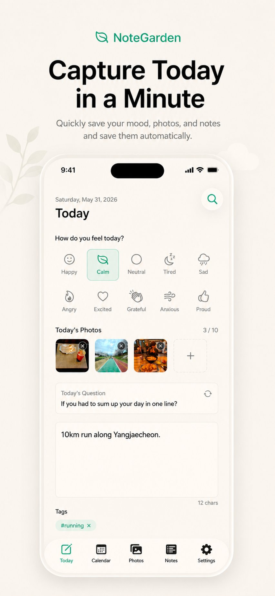
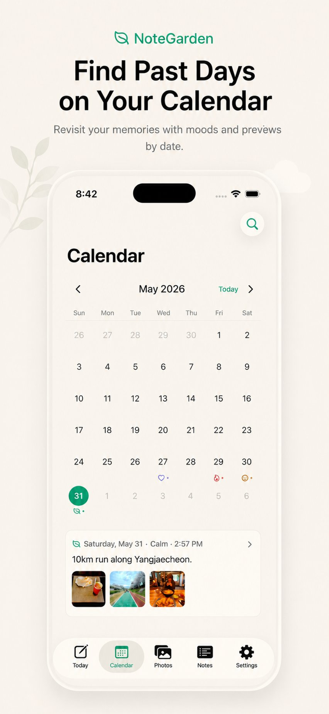
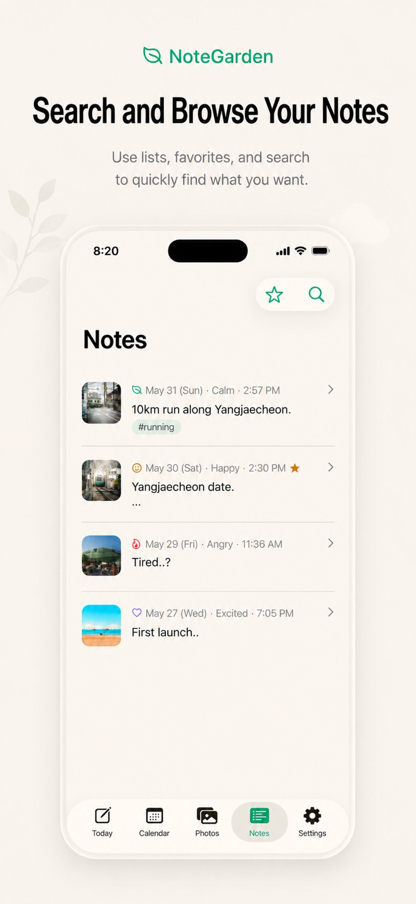
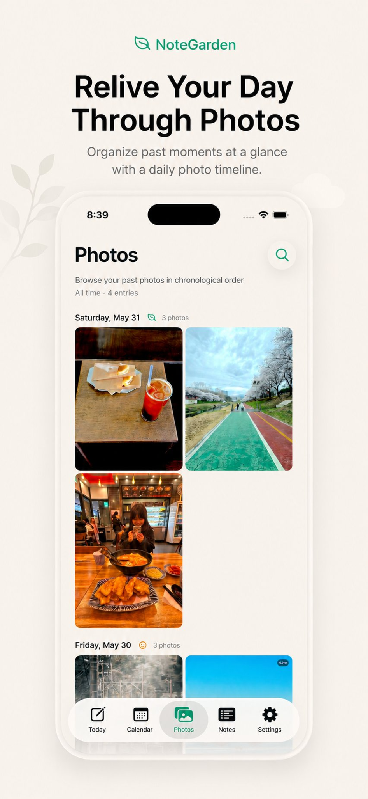
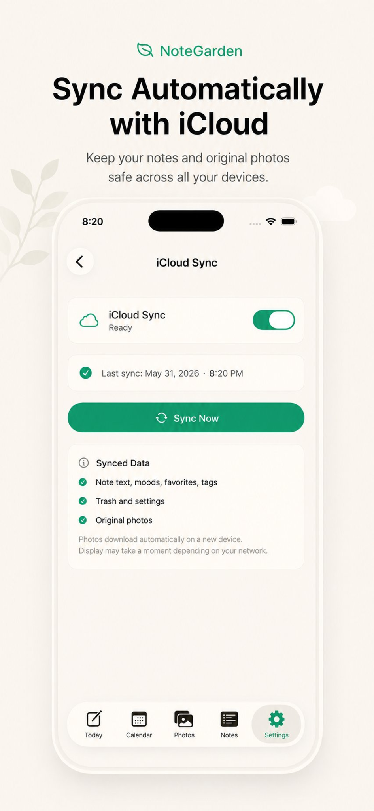
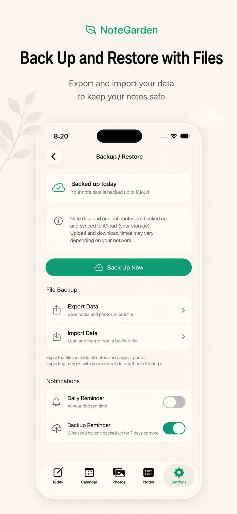
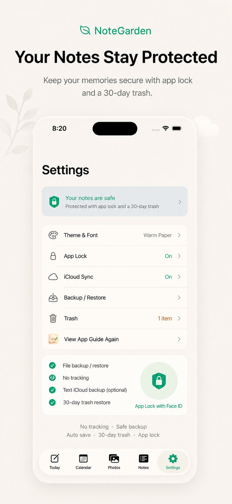

Mood + daily prompts
Choose how you feel, answer a gentle question, or simply write what happened today.
A quiet daily journal
Save your mood, photos, and a few lines in under a minute. NoteGarden keeps the experience light, private, and easy to revisit.

Made for everyday memories
One entry a day, with enough structure to help you begin and enough freedom to make it yours.
Choose how you feel, answer a gentle question, or simply write what happened today.
See recorded days at a glance and jump back to entries with mood and photo previews.
Browse your notes, find an older memory quickly, and keep favorite entries close.
Relive moments chronologically with a photo-first view organized by entry date.
With Pro, keep notes and original photos synced across devices using your private iCloud.
Export and import backups, protect the app with Face ID or a NoteGarden PIN, and restore from the 30-day trash.
See it in action
Today, Calendar, Notes, Photos, sync, backup, and privacy — all in one calm flow.






NoteGarden Pro
NoteGarden is free to download with an optional lifetime Pro purchase. Payments are handled by Apple through the App Store. There are no ads and no third-party tracking.